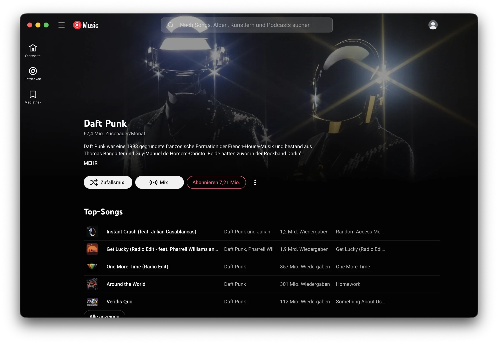
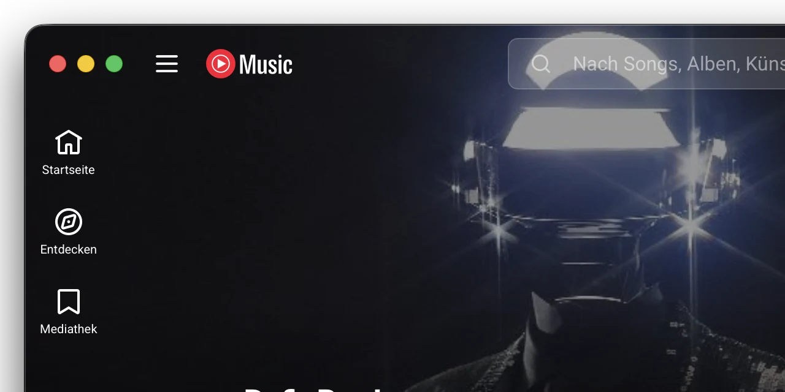

Gibt es eine native YouTube Music App für den Mac?
Aktualisiert 8. November 2026 · 4 Min.
Kurz gesagt: Von Google nicht – auf dem Mac läuft YouTube Music offiziell nur im Browser-Tab. Am nächsten an eine native YouTube Music App kommt Tubemac: eine kostenlose Mac-App (1 MB, in Swift geschrieben, kein Electron), die YouTube Music aussehen und sich verhalten lässt, als wäre es für macOS gemacht – mit randlosem Fenster, sauberem Eintrag im Kontrollzentrum, funktionierenden Mediatasten und Musik, die weiterläuft, wenn du das Fenster schließt.

Woran merkt man, dass sich eine App nativ anfühlt?
Eine native Mac-App erkennst du nicht am Code, sondern daran, wie sie sich verhält. Sie fügt sich ein wie Finder, Mail oder Apple Music: eigenes Fenster und Dock-Icon, die gewohnten Kurzbefehle und Zusammenspiel mit dem System – Mediatasten, Kontrollzentrum, Vollbild. Ein Browser-Tab kann davon nichts, eine verpackte Website oft nur die Hälfte.
Die Nativ-Checkliste
| Fühlt sich nativ an, wenn… | Tubemac | Safari-Web-App | Browser-Tab |
|---|---|---|---|
| Eigene App im Dock und bei ⌘-Tab | Ja | Ja | Nein |
| Keine Adressleiste, kein grauer Titelstreifen – Inhalt bis zum Rand | Ja, Cover laufen hinter die Fensterknöpfe | Nein, normale Titelleiste | Nein |
| Fensterknöpfe sitzen in der Leiste, wie bei Apple-Apps | Ja | Nein | Nein |
| Mediatasten und AirPods steuern die App | Ja | Ja | Konkurriert mit anderen Tabs |
| Kontrollzentrum zeigt Zurück / Play / Weiter | Ja, plus Spul-Regler | Teils Sekunden-Knöpfe | Teils Sekunden-Knöpfe |
| Musik läuft weiter, wenn das Fenster zu ist | Ja | Nein | Nein |
| Oberfläche federt nicht nach wie eine Webseite | Ja | Nein | Nein |
| Mac-Menüs und ⌘-Kurzbefehle für die Wiedergabe | Ja (⌘P, ⌘→, ⌘←) | Safari-Menüs | Browser-Menüs |
So fühlt sich YouTube Music mit Tubemac nativ an

- Ein echtes Mac-Fenster. Keine Adressleiste, kein Titelstreifen. Künstlerfotos und Albumfarben reichen bis zum oberen Rand, die Fensterknöpfe sitzen sauber in der Leiste. Fenster an der Leiste ziehen, Doppelklick zum Vergrößern.
- In macOS eingebunden. Abspielen, pausieren und skippen mit Mediatasten, AirPods oder Touch Bar – aus jeder App. Im Kontrollzentrum ein einziger, sauberer Eintrag mit Cover, Zurück, Play/Pause, Weiter und Regler.
- Verhält sich wie eine Musik-App. Fenster zu, Musik läuft weiter; ein Klick aufs Dock-Icon holt es zurück. Die Suche sitzt mittig, die Oberfläche bleibt fest statt nachzufedern.
- Klein und sparsam. In Swift geschrieben, mit Apples eigener Web-Technik – derselben wie in Safari. Nur 1 MB, nativ auf Apple Silicon und Intel.
- Nichts fehlt. Drinnen läuft das offizielle YouTube Music: Mediathek, Playlists, Songtexte, Premium und jede neue Funktion sofort – auch mit kostenlosem Konto.
Und andere YouTube-Music-Apps?
Kaset baut die komplette Oberfläche in Apples SwiftUI nach – durch und durch nativ, aber erst ab macOS 15.4 und mit Premium für die volle Wiedergabe; neue YouTube-Music-Funktionen kommen erst mit App-Updates. YTMDesktop und Pear Desktop sind beliebte Apps für alle Systeme auf Electron-Basis: Sie bringen ein eigenes Chrome mit (ca. 118 MB am Mac) und wirken eher wie ein Chrome-Fenster als wie eine Mac-App. Der ausführliche Vergleich: YouTube Music auf dem Mac – 5 Wege.
Tubemac in zwei Minuten ausprobieren
- Tubemac (1 MB) von der Tubemac-Website laden und die ZIP-Datei doppelklicken.
- Tubemac in den Ordner Programme ziehen und öffnen.
- Fragt macOS nach: Systemeinstellungen → Datenschutz & Sicherheit → „Dennoch öffnen“ (warum?).
- Auf Anmelden klicken und mit dem Google-Konto einloggen – Tubemac merkt sich das.
Häufige Fragen
Gibt es eine native YouTube Music App für den Mac?
Von Google nicht – auf dem Mac läuft YouTube Music offiziell nur im Browser. Tubemac ist eine kostenlose Mac-App (1 MB, Swift, kein Electron), die YouTube Music wie eine native Mac-App wirken lässt: randloses Fenster, Kontrollzentrum, Mediatasten und Wiedergabe im Hintergrund.
Fühlt sich Tubemac wie eine native Mac-App an?
Ja, genau dafür ist sie gemacht: eigenes Fenster mit den Fensterknöpfen in der Leiste, randlose Cover, Mac-Menüs und ⌘-Kurzbefehle, Mediatasten, ein sauberer Eintrag im Kontrollzentrum und Musik, die bei geschlossenem Fenster weiterläuft.
Ist Tubemac eine Electron-App?
Nein. Tubemac ist in Swift geschrieben und nutzt Apples WebKit, die Technik hinter Safari. Deshalb ist die App nur etwa 1 MB groß, Electron-Apps für YouTube Music dagegen rund 118 MB.
Gibt es eine nativ wirkende YouTube Music App für den Mac ohne Premium?
Ja. Tubemac funktioniert mit kostenlosen und Premium-Konten, weil darin der offizielle YouTube-Music-Player läuft.
YouTube Music als echte Mac-App?
Tubemac ist eine kostenlose YouTube Music App für den Mac (1 MB) – randloses Design, Mediatasten, Kontrollzentrum und Wiedergabe im Hintergrund. Apple Silicon & Intel, ab macOS 14.